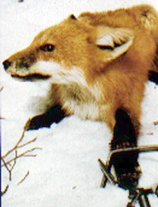
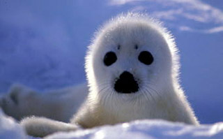

Fur Trade
Each year, more than 1 billion rabbits and 50 million other animals — including foxes, seals, mink, and raccoon dogs — are raised on fur farms or trapped in the wild and killed for their pelts. Because much of the fur is imported from China and other countries that have poor regulation, it is often mislabeled as "faux".
Depending on the size of the garment, 100 animals or more may be killed for a single coat.
The vast majority of animals killed for fur are raised on farms and kept in deplorable conditions. Mink and foxes are naturally wild animals and do not adapt to life in captivity.
Wild mink instinctively ranges a territory of approximately 741 acres in size. In contrast, ranch-raised mink is confined to a 12” by 18” cage. This type of intensive confinement can result in self-mutilation, cannibalism, and high-level stress that weakens the immune system and makes animals more susceptible to disease.
Unfortunately, fur is currently in fashion as demonstrated by the fact that fur sales are on the rise. In addition, the number of leading designers and/or design houses working in fur, shearling or fur trim has grown over the past five years.
Millions of dogs and cats in China are bludgeoned, hanged, bled to death and strangled with wire nooses so that their fur can be turned into trim and trinkets. This fur is often deliberately mislabeled as fur from other species and is exported to the United States to be sold to unsuspecting customers in retail stores.
However, there are many designers who refuse to work with animal fur such as Stella McCartney and Todd Oldham, two of today’s most fashionable designers, who are dedicated to only using synthetic materials in their designs. Furthermore, it is gratifying to know luxurious alternatives to animal fur exist and, at the same time, make the destruction of countless animals unnecessary.
How it affects us?
Approximately 30% of mink herds raised on Utah fur farms carry Aleutian disease (AD). Currently, there is no treatment, vaccine or cure for this highly infectious disease, resulting in the mortality of about 20% of the herd annually.
Another risk to life in captivity includes farmers selectively crossbreeding mink with naturally occurring mutations, which results in fur colors never seen in nature. This has led to genetic defects resulting in deaf white mink and pastel mink with nervous disorders.

The most popular form of trapping throughout the U.S., Canada and Russia (top three wild fur pelt producers) is the leg hold trap. However, 90 countries and some states,
including California, Florida, Massachusetts, New Jersey, Rhode Island, and Washington, have banned the use of the leg hold trap because of the cruelty it inflicts on animals. It has been deemed “inhumane” by the American Veterinary Medical Association.
The steel-jaw trap violently clamps down on the animal’s leg, leaving the helpless creature to struggle for hours or days without food, water or protection from the weather and predatory animals. When the owner eventually returns to collect his “catch,” he viciously kills the animal by clubbing or suffocating the animal by standing on its neck and chest for several minutes, ensuring that the pelt is not damaged.

Each year from November through March, harp seals migrate from Greenland to Canada’s Atlantic coast. This annual cycle of birth and renewal is tainted by a Canadian government-sanctioned hunt, which encourages the slaughter of a large number of seals.
The Canadian government and animal advocates are at the center of this heated debate. Under the reign of former Prime Minister Chrétien, the Canadian government increased its kill quota by 25% which could result in the slaughter of almost one million seals during the next three migration seasons. The government claims the overpopulation of seals has depleted cod fisheries. In reality, the exorbitant number of seals murdered in the 1960s depleted the seal population to a meager 1.8 million.
Today, the seal population has returned to a normal 5.2 million. In 2016, over 66,000 seal pups were killed for their fur, genitalia, and Omega 3 oils. The fur is used to make clothing, boots and garment trim;
genitals are widely used as an aphrodisiac in traditional Chinese medicine, and the oils are used as a supplement for human consumption. The majority of the seals are skinned alive and are between the ages of 12 days and 12 months old. Others are left to suffer after being clubbed until a hunter returns to skin them.